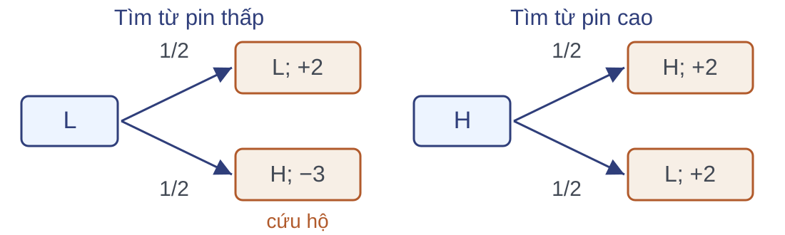

Hai phản hồi của hành động Tìm

Mỗi kết quả là một cặp trạng thái mới kèm thưởng. Ví dụ số theo Sutton–Barto; thưởng cố định trên mỗi nhánh.
Bảng phản hồi của robot
| Hiện tại | Hành động | Kế tiếp | Thưởng | Xác suất |
|---|
| Pin cao | Tìm | Pin cao | 2 | 1/2 |
| Pin thấp | 2 | 1/2 |
| Pin cao | Chờ | Pin cao | 1 | 1 |
| Pin thấp | Tìm | Pin thấp | 2 | 1/2 |
| Pin cao (cứu hộ) | −3 | 1/2 |
| Pin thấp | Chờ | Pin thấp | 1 | 1 |
| Pin thấp | Sạc | Pin cao | 0 | 1 |
Với mỗi cặp trạng thái–hành động hợp lệ, tổng xác suất các phản hồi bằng 1. Ví dụ số theo Sutton–Barto; thưởng cố định trên mỗi nhánh.
Xác suất chuyển trạng thái và phần thưởng
Gọi $\mathcal S$ là tập trạng thái, $\mathcal A(s)$ là tập hành động hợp lệ tại $s$, $\mathcal R$ là tập điểm thưởng; cả ba đều hữu hạn.
Ví dụ: $p(\mathrm H,-3\mid \mathrm L,\mathrm{tim})=\tfrac12$.
$$\begin{aligned}&p(s',r\mid s,a)\\&\quad=\Pr(S_{t+1}=s',R_{t+1}=r\mid S_t=s,A_t=a).\end{aligned}$$
$$p(s',r\mid s,a)\ge 0,\qquad\sum_{s'\in\mathcal S}\sum_{r\in\mathcal R}p(s',r\mid s,a)=1.$$
Xác suất chuyển và thưởng trung bình
L–Tìm: về H với xác suất 1/2; thưởng trung bình $\tfrac12\cdot 2+\tfrac12\cdot(-3)=-\tfrac12$.
−1/2 là kỳ vọng; mỗi lần robot nhận 2 hoặc −3.
$$p(s'\mid s,a)=\sum_{r\in\mathcal R}p(s',r\mid s,a),$$
$$r(s,a)=\mathbb E[R_{t+1}\mid S_t=s,A_t=a]$$
$$\phantom{r(s,a)}=\sum_{s'\in\mathcal S}\sum_{r\in\mathcal R}r\,p(s',r\mid s,a).$$
Các thành phần của MDP
| Thành phần | Ý nghĩa | Ở robot |
|---|
| $\mathcal S$ | Tập trạng thái | $\{\mathrm H,\mathrm L\}$ |
| $\mathcal A(s)$ | Tập hành động hợp lệ tại $s$, phụ thuộc mức pin | H: Tìm, Chờ; L: Tìm, Chờ, Sạc |
| $\mathcal R$ | Tập điểm thưởng hữu hạn | $\{-3,0,1,2\}$ |
| $p(s',r\mid s,a)$ | Bảng phản hồi, tổng mỗi nhóm bằng 1 | Bảy hàng đã lập |
$$\mathcal M=\bigl(\mathcal S,\ \{\mathcal A(s)\}_{s\in\mathcal S},\ \mathcal R,\ p\bigr).$$
Trạng thái Markov; quy luật phản hồi không đổi theo thời gian.
Câu hỏi kiểm tra
Câu hỏi:
- Đọc $p(\mathrm H,0\mid \mathrm L,\mathrm{sac})$; tổng xác suất sau L–Sạc bằng bao nhiêu?
- Thưởng trung bình sau L–Tìm bằng bao nhiêu? Robot có lần nào nhận đúng điểm đó?
- Nếu thưởng là $-3$ sau L–Tìm, trạng thái kế tiếp là gì? Thưởng và trạng thái mới có độc lập không?
| Hiện tại | Hành động | Kế tiếp | Thưởng | Xác suất |
|---|
| L | Sạc | H | 0 | 1 |
| L | Tìm | L | 2 | 1/2 |
| L | Tìm | H (cứu hộ) | −3 | 1/2 |